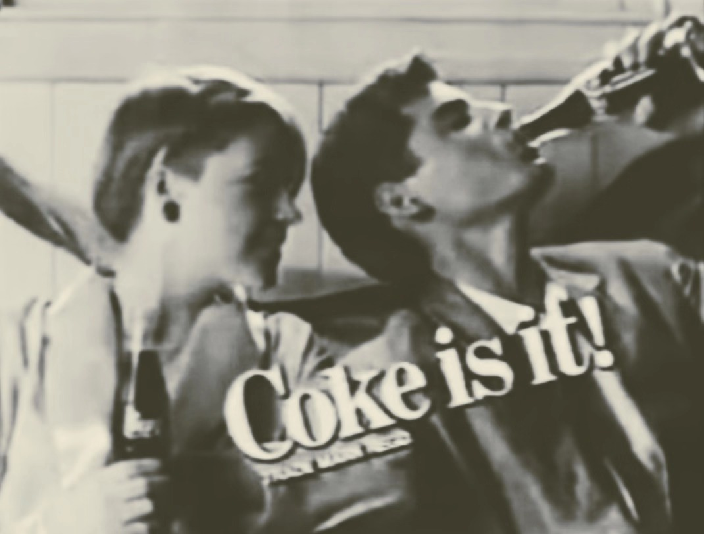

{kind=link}
JAPAN DECIDES TO SURRENDER
Suzuki, Kido, and the Emperor realized the day would end with either an acceptance of the American terms or a military coup. The Emperor met with the most senior Army and Navy officers. While several spoke in favor of fighting on, Field Marshal Shunroku Hata did not. As commander of the Second General Army, the headquarters of which had been in Hiroshima, Hata commanded all the troops defending southern Japan—the troops preparing to fight the "decisive battle". Hata said he had no confidence in defeating the invasion and did
not dispute the Emperor's decision. The Emperor asked his military leaders to cooperate with him in ending the war.At a conference with the cabinet and other councilors, Anami, Toyoda, and Umezu again made their case for continuing to fight, after which the Emperor said:
I have listened carefully to each of the arguments presented in opposition to the view that Japan should accept the Allied reply as it stands and without further clarification or modification, but my own thoughts have not undergone any change. ... In order that the people may know my decision, I request you to prepare at once an imperial rescript so that I may broadcast to the nation. Finally, I call upon each and every one of you to exert himself to the utmost so that we may meet the trying days which lie ahead.
{kind=link}
A microwave oven cooks or heats food by dielectric heating. Cooking food with microwaves was discovered by Percy Spencer, while building magnetrons for radar sets at Raytheon. Spencer was working on an active radar set when he noticed a strange sensation and saw that a peanut candy bar he had in his pocket started to melt. Although he was not the first to notice this phenomenon, as the holder of 120 patents, Spencer was no stranger to discovery and experiment and realized what was
happening.
The radar had melted his candy bar with microwaves. The first food to be deliberately cooked with microwaves was popcorn, and the second was an egg. The radar had melted his candy bar with microwaves.
This past week, many places around the world received an identical encryption code. Some appeared in the mailbox, some in the straw. One student from Beijing, China, even claimed to have seen the letter come out of the air suddenly and fall on his desk. Whether this was a frivolous prank or a premeditated political or racial act remains to be seen. We will follow up If there is any new progress. The code is posted on the right.
⊑⟟⏁⊑⟒⍀⟒☊⍜⋏☌⍀⏃⏁⎍⌰⏃⏁⟟⍜⋏⌇ ⍜⋏ ⌇⍜⌰⎐⟟⋏☌ ⏁⊑⟒ ☊⍜⎅⟒. ⏁⊑⟟⌇ ⟟⌇ ⏃ ⋔⟒⌇⌇⏃☌⟒ ⎎⍀⍜⋔ 2222. ⌇⍜⍀⍀⊬ ⏃⏚⍜⎍⏁ ⏁⊑⟒ ☊⍜⎅⟒，⏚⟒☊⏃⎍⌇⟒ ⍜⎎ ⏁⟒☊⊑⋏⟟⍾⎍⟒ ⟟⌇⌇⎍⟒⌇, ⏁⊑⟒ ☊⊑⏃⍀⏃☊⏁⟒⍀⌇ ⋔⏃⊬ ☊⊑⏃⋏☌⟒ ⏁⊑⍀⍜⎍☌⊑ ⏁⊑⟒ ⏁⟟⋔⟒ ⏁⎍⋏⋏⟒⌰. ⟟ ⊑⍜⌿⟒ ⏁⊑⟒⊬ ⎅⍜ ⋏⍜⏁ ⏚⍜⏁⊑⟒⍀ ⊬⍜⎍ ⏁⍜⍜ ⋔⎍☊⊑ ⏁⍜ ⌇⍜⌰⎐⟒ ⟟⏁. ⍙⟒ ⊑⏃⌿⌿⟟⌰⊬ ⍙⏃⋏⏁ ⏁⍜ ⏁⟒⌰⌰ ⊬⍜⎍ ⏁⊑⏃⏁ ⍙⟒ ⟟⋏⎐⟒⋏⏁ ⏁⊑⟒ ⏁⟟⋔⟒ ⋔⏃☊⊑⟟⋏⟒ ⏃⋏⎅ ⏁⊑⟟⌇ ⟟⌇ ⏃ ⏁⟒⌇⏁. ⟟ ☍⋏⍜⍙ ⊬⍜⎍ ⋔⏃⊬ ⋏⍜⏁ ⏚⟒⌰⟟⟒⎐⟒ ⍙⊑⏃⏁ ⟟'⋔ ⌇⏃⊬⟟⋏☌. ⍙⊑⏃⏁ ⏃⏚⍜⎍⏁ ⏁⊑⟟⌇? ⏁⊑⟟⌇ ⊬⟒⏃⍀ ⊬⍜⎍ ⍙⟟⌰⌰ ⌇⟒⟒ ⏁⊑⟒ ⏚⟟⍀⏁⊑ ⍜⎎ ⏃ ⏚⟒⎐⟒⍀⏃☌⟒ ☊⍜⋔⌿⏃⋏⊬ ☊⏃⌰⌰⟒⎅ ☊⍜☊⏃-☊⍜⌰⏃, ⍙⊑⟟☊⊑ ⍙⟟⌰⌰ ⏚⟒☊⍜⋔⟒ ⏃ ⏚⟒⎐⟒⍀⏃☌⟒ ☌⟟⏃⋏⏁ ⎎⍜⍀ ☊⟒⋏⏁⎍⍀⟟⟒⌇ ⏁⊑⟒ ⌰⍜⏁⏁⟒⍀⊬ ⋏⎍⋔⏚⟒⍀⌇ ⍜⋏ ⎅⟒☊⟒⋔⏚⟒⍀ 31 ⍙⏃⌇ 478,521. ☌⍜⍜⎅ ⌰⎍☊☍!
